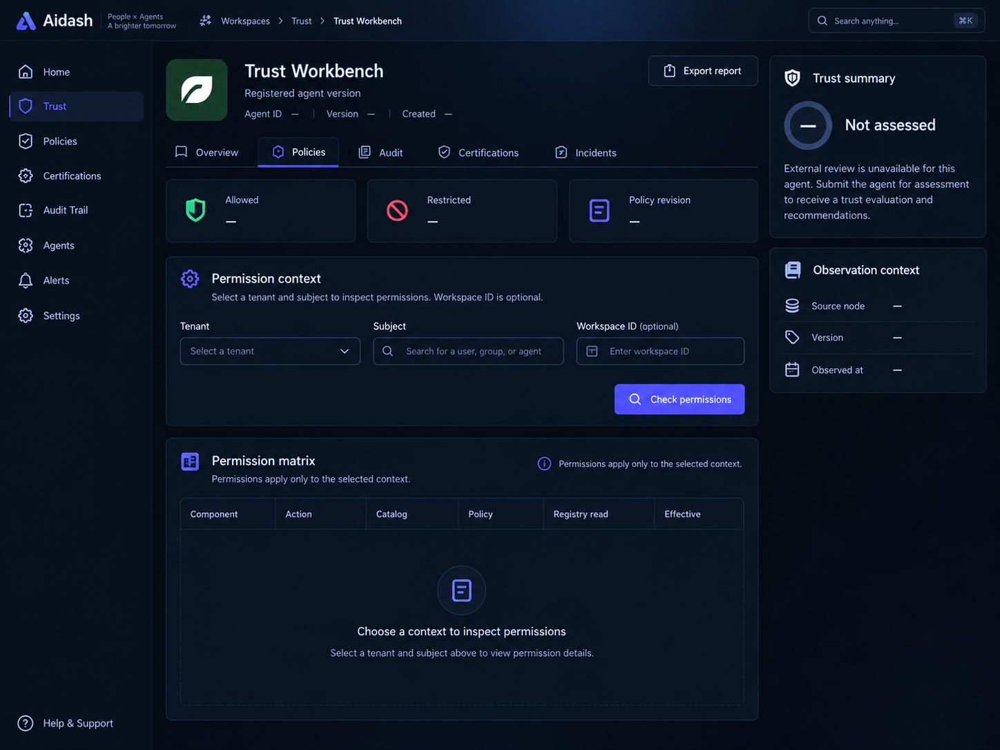
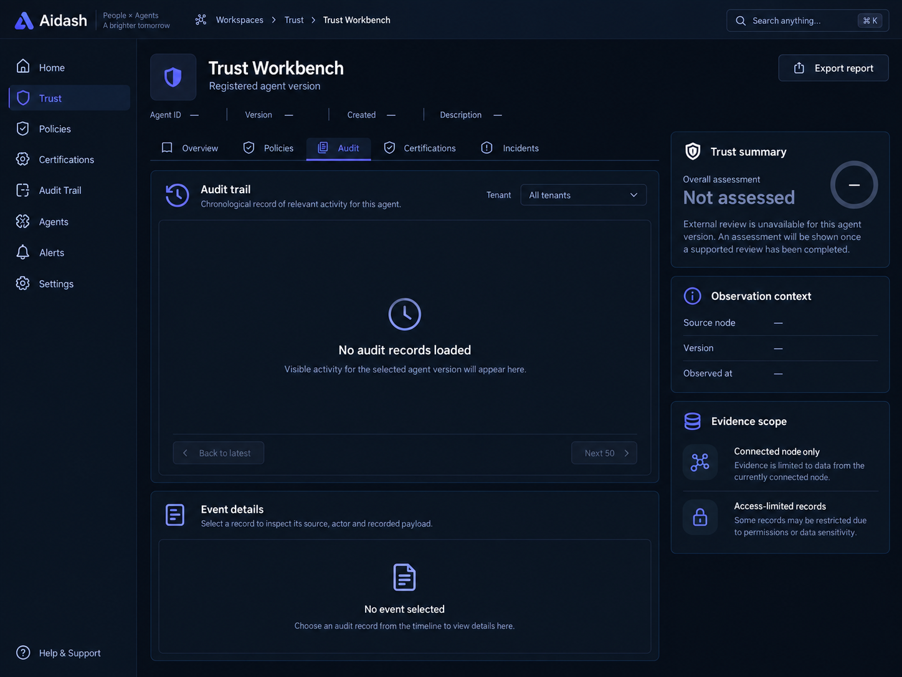
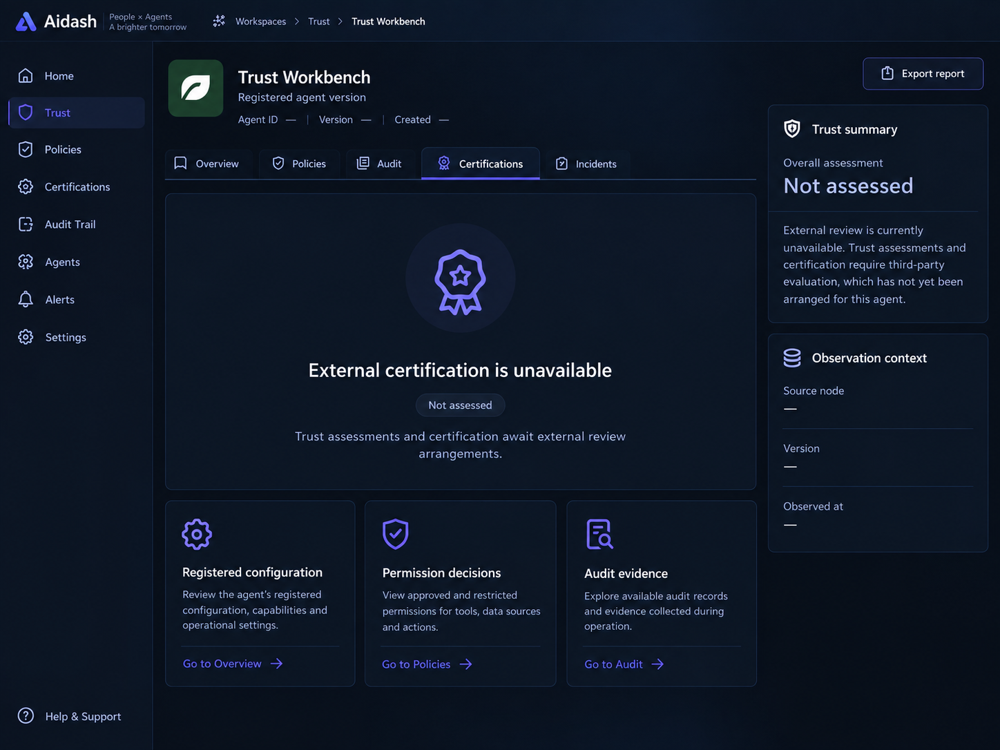
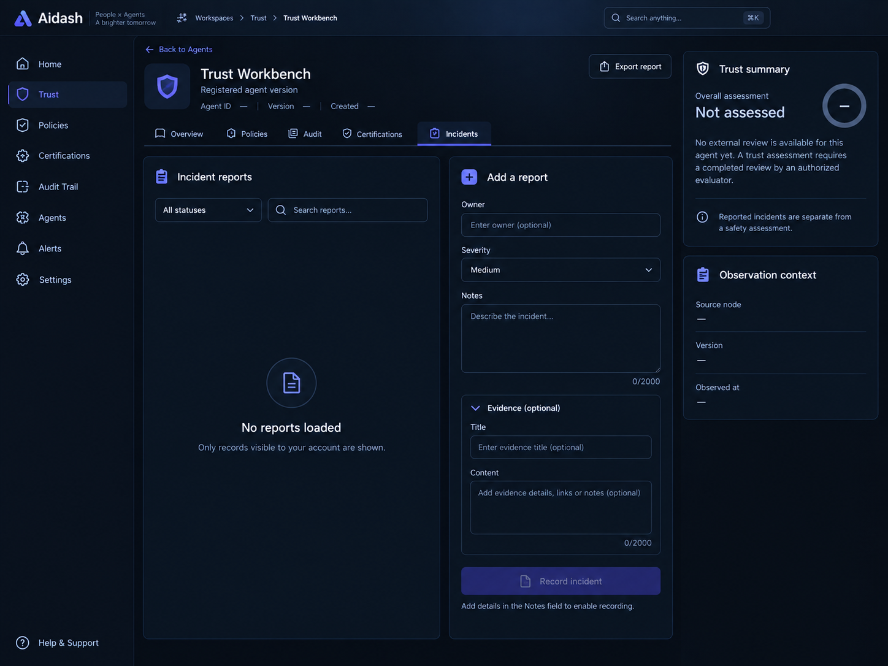

<!doctype html>
<html lang="ja">
  <meta charset="utf-8" /><meta
    name="viewport"
    content="width=device-width, initial-scale=1"
  /><title>Trust Workbench — 詳細タブのデザイン案</title
  ><style>
    body {
      margin: 0;
      background: #090f1b;
      color: #edf1ff;
      font: 16px/1.6 system-ui;
      padding: 32px;
    }
    h1 {
      font-size: 24px;
    }
    p {
      color: #a4b3ce;
    }
    nav {
      display: flex;
      gap: 24px;
      flex-wrap: wrap;
    }
    a {
      color: #a99cff;
    }
    section {
      margin-top: 40px;
    }
    img {
      width: 100%;
      height: auto;
      border: 1px solid #26364d;
      border-radius: 12px;
    }
    main {
      max-width: 1448px;
      margin: auto;
    }
    h2 {
      font-size: 20px;
    }
  </style>
  <main>
    <h1>Trust Workbench：詳細タブのデザイン案</h1>
    <p>
      承認用の生成画像です。実画面ではAPIの実データを表示し、未取得・未評価は明示します。
    </p>
    <nav>
      <a href="#policies">Policies</a><a href="#audit">Audit</a
      ><a href="#certifications">Certifications</a
      ><a href="#incidents">Incidents</a>
    </nav>
    <section id="policies">
      <h2>1. Policies — 条件指定と権限マトリクス</h2>
      
    </section>
    <section id="audit">
      <h2>2. Audit — 監査履歴とイベント詳細</h2>
      
    </section>
    <section id="certifications">
      <h2>3. Certifications — 未評価状態と確認可能な証拠</h2>
      
    </section>
    <section id="incidents">
      <h2>4. Incidents — 記録一覧と報告フォーム</h2>
      
    </section>
  </main>
</html>
